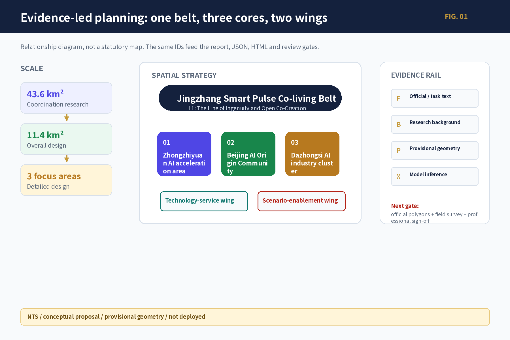
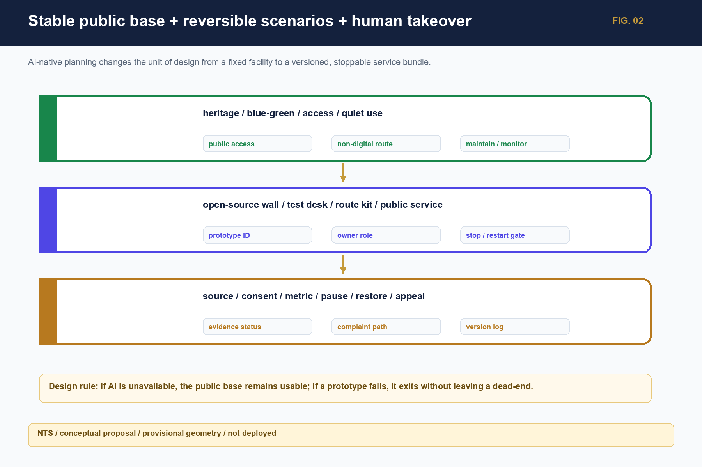
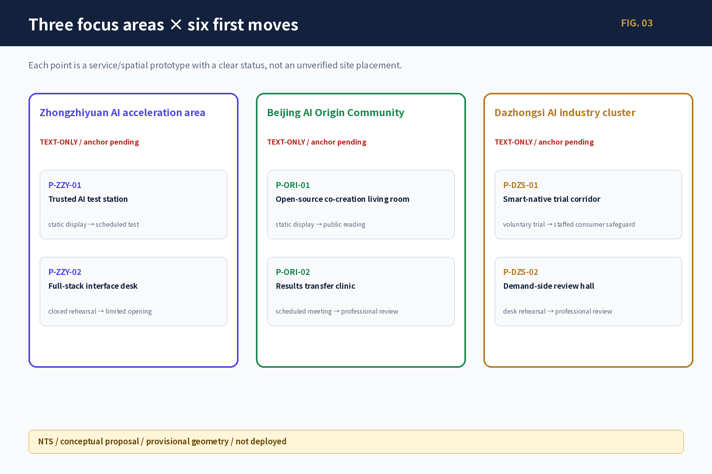
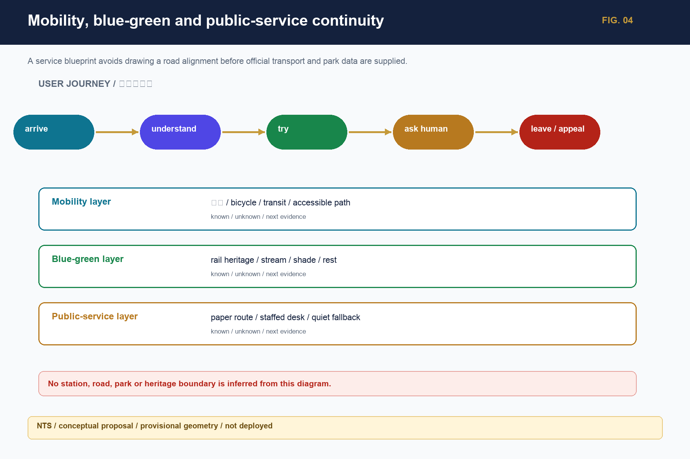
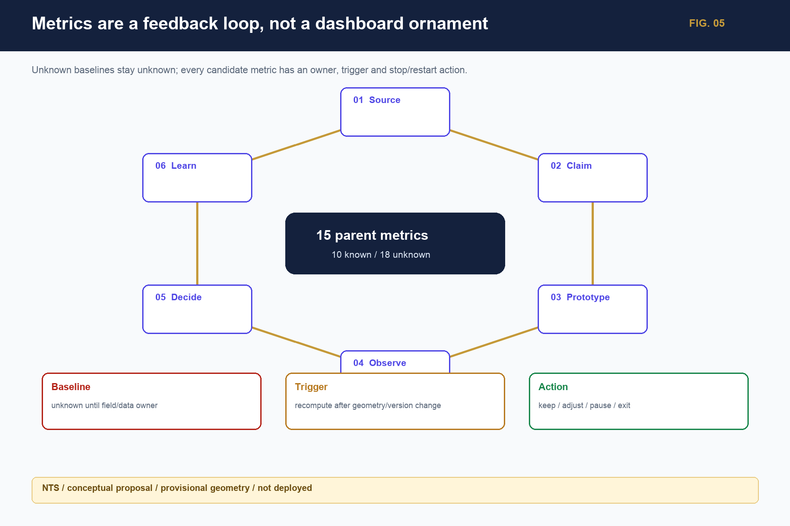

agent.1
Concept / identity
Jingzhang Smart Pulse Co-living Belt + L0—L5 naming tree + logo grammar
candidate only; state and rights gates; not a final VI
Evidence-led visual outputs for six tasks: relationship diagrams, scenario cards, prototype catalogue, operations loop and traceable states.
This offline, no-tracking research interaction filters scenario cards. The canvas shows three areas and six points without generating coordinates or engineering routes.
These navigation labels correspond to the visual gate; numbers carry state and do not turn provisional geometry into controls.
One relationship diagram answers ‘how’; five evidence figures answer ‘why’. Figures do not replace official boundaries.

Each task shows a conclusion, concrete output and boundary; these are deliverables, not instructions to do later.
Jingzhang Smart Pulse Co-living Belt + L0—L5 naming tree + logo grammar
7 cases → research/open source → test → market → knowledge
13 scenarios, 8 users, 6 prototypes, non-digital fallback
3 landmark prototypes + 12 public-space components
three-layer non-causal railway–Zhongguancun–AI narrative
19 daily/weekly/seasonal/annual activities + six-stage loop
The spatial strategy name is fixed as Jingzhang Smart Pulse Co-living Belt; The Line of Ingenuity and Open Co-Creation is the L1 public narrative; seven global cases are used for mechanism comparison only.

Focus areas express functions and service prototypes; provisional placeholders are not upgraded to official coordinates.

Each card puts problem, move, users, decision signal and entry/stop gate together; these are candidate prototypes, not placed works.
Primary users: 科研/创业团队；测试与安全人员
Minimum move: 开放验证桌 → 受控测试舱候选
Decision signal: 材料、数据与风险完整性；人工接管演练；退出清理
Gate / stop: 责任人、消防/设备/数据授权未核前只做离线推演
概念候选 / provisional_area_text_onlyPrimary users: 项目团队；需求方；公众代表
Minimum move: 问题卡—资源卡—责任—停复/退出账本
Decision signal: 状态公开率；停止清理率；线下任务完成率
Gate / stop: 无治理章程、人工责任或申诉路径不得开放
概念候选 / non_spatial_servicePrimary users: 开发者；学生；居民；非数字参与者
Minimum move: 人工前台 + 每周开源桌 + 纸质资源目录
Decision signal: 许可完整率；无障碍可达；维护响应；纠错/撤回闭环
Gate / stop: 内容来源或权利不清即撤下或只显示索引
概念候选 / provisional_area_text_onlyPrimary users: 需求方；研究者；创业团队；IP/法务/测试角色
Minimum move: 问题卡 → 证据成熟度分诊 → 人工转介
Decision signal: 首次转接时间；责任人确认率；退回原因；90日维护人
Gate / stop: 不承诺融资、入驻或采购；权属和真实需求不清则退回
概念候选 / provisional_area_text_onlyPrimary users: 消费者；自愿商户；运营与消费权益人员
Minimum move: 自愿单项服务 + 普通服务保底 + 30日候选试用
Decision signal: 知情拒绝率；客服响应；投诉与数据清理闭环
Gate / stop: 不得默认画像、自动定价或隐藏人工；公平/隐私不明即停
概念候选 / provisional_area_text_onlyPrimary users: 通勤者；老人/残障人士；需求方；交通/无障碍专业
Minimum move: 纸质四象限任务走查 → 问题单 → 专业复核
Decision signal: 首次到达任务完成；无障碍中断点；责任回应率
Gate / stop: 站口、道路和路权未核验不做工程结论
概念候选 / text_only_pending_official_anchorFive Sentinel-2 L2A images are used only for background observation, corridor relationships and issue discovery; recut, overlay and recompute after official polygons, roads, ownership and engineering data arrive.

仅背景观察 / 不由像元推导边界
Sentinel-2 L2A · 2026-07-15 · research background; provisional, not a statutory base map.
纵向关系观察 / provisional study placeholders
Sentinel-2 L2A · 2026-07-15 · research background; provisional, not a statutory base map.
背景观察 / 载体与边界待核
Sentinel-2 L2A · 2026-07-15 · research background; provisional, not a statutory base map.
背景观察 / 权属与锚点待核
Sentinel-2 L2A · 2026-07-15 · research background; provisional, not a statutory base map.
背景观察 / 站口关系与道路待核
Sentinel-2 L2A · 2026-07-15 · research background; provisional, not a statutory base map.Each card states user, action and stop/restart state; medical, education and commerce do not perform diagnosis, admission, credit or final consumer decisions.
User: developer / professional reviewer
桌面推演→受控测试User: developer / resident
离线演示→有限预约User: developer / student
静态展示→人工共创User: student / resident
纸质入口→教师/人工支持User: developer / public reader
静态展示→公众阅读User: contributor / public
署名核验→可撤回User: resident / caregiver
公开信息→人工转接User: resident / visitor
纸质路线→人工讲解User: shopper / operator
自愿试用→人工消费保障User: older / disabled user
观察→专业复核User: international visitor
双语展示→人工接待User: public / enterprise
匿名浏览→授权演示User: community / operator
活动→复盘沉淀Three landmarks, twelve components, a three-layer non-causal cultural narrative, five route types and nineteen daily/weekly/seasonal/annual activities turn the pilgrimage idea into a durable use loop.
Reversible, correctable, human-takeover public-space prototypes; no unverified site placement.
Railway, Zhongguancun and AI cultures are not written as an unverified causal history; routes start as text/paper versions.
All 19 activities have role, dependency, metric, stop, restore and restart conditions; real operators and baselines remain unknown.

The result is not a static final image but an offline set usable by public, planners, operators and machines.
